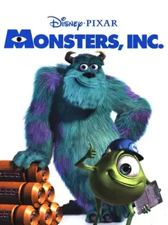

 |
|
| Tiempo de juego | 4m 35s |
| Última actividad | 11/11/2025 8:59:39 |
| Añadido | 27/7/2025 1:39:52 |
| Modificado | 10/12/2025 11:28:48 |
| Estado de finalización | Jugado |
| Librería | Playnite |
| Fuente | |
| Plataforma | PC (Windows) |
| Fecha de lanzamiento | 19/3/2002 |
| Puntuación de la Comunidad | 68 |
| Puntuación de la Crítica | 55 |
| Puntuación de usuario | |
| Género | Kids |
| Desarrollador | |
| Editor | Sony Computer Entertainment |
| Característica | Single Player |
| Enlaces | Wikipedia Twitch |
| Tag | |
Ah, la época dorada de Pixar, cuando los juegos de sus películas eran plataformeros 3D queribles y bien hechos que te transportaban directo a su mundo. "Monsters, Inc." es un ejemplo perfecto de esto, un juego que capturó toda la magia y el humor de la película en una aventura súper simpática.
Lo copado de este juego es que no te contaba la película de nuevo. Era una especie de precuela donde jugabas como Mike o Sulley en su época de entrenamiento en la "Isla de los Sustos", el centro de formación profesional de Monsters, Inc. Tu objetivo era convertirte en el mejor asustador, recorriendo diferentes zonas de simulación (una ciudad, un desierto, la nieve) y demostrando tu valía.
Podías elegir a cualquiera de los dos para cada nivel y se sentían bien distintos. Sulley era la fuerza bruta: usaba su rugido para paralizar, sus garras para atacar y su peso para romper cosas. Mike era más ágil y rápido, y usaba sus gritos como si fueran proyectiles sónicos para liquidar a los enemigos a distancia.
El juego es un plataformero 3D de manual, en el buen sentido. Explorás los niveles, buscás a los "nervios" (unos robots con forma de nenes) para practicar tus sustos, y juntás coleccionables por todos lados. Simple, directo y súper entretenido, hecho por la gente que años después haría joyas como Dead by Daylight (¡datazo!).
Es otro ejemplo de un juego de película hecho con ganas y respeto. No te va a cambiar la vida, pero es colorido, divertido y captura a la perfección la magia de Pixar. Una joyita de la nostalgia ideal para pasar un buen rato con tu niñx.